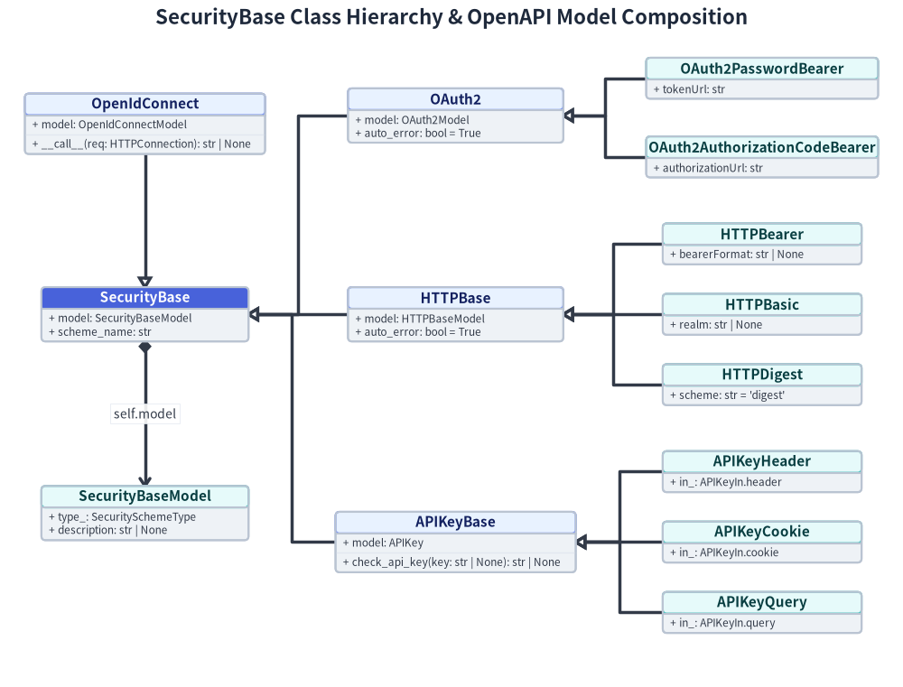
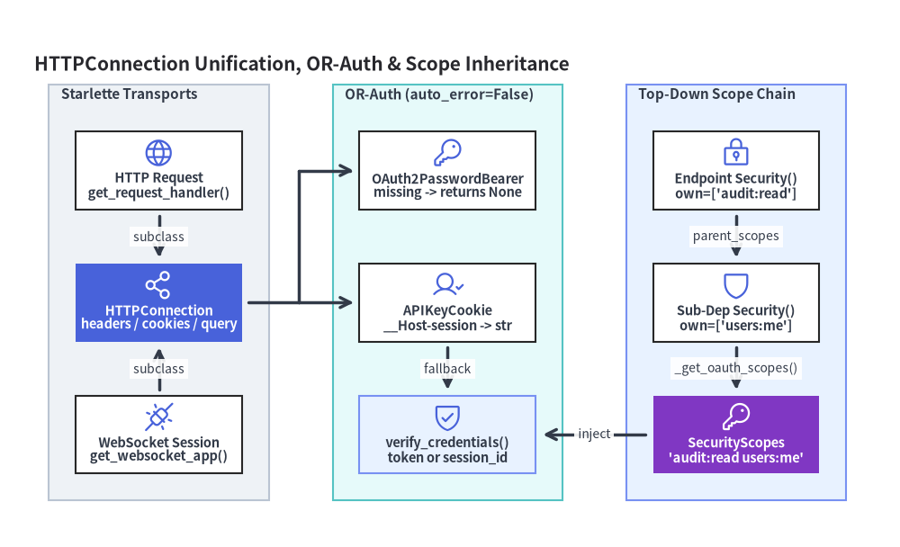

SecurityBase 階層・HTTPConnection・SecurityScopes
FastAPI は認証・認可機構を独立した WSGI/ASGI ミドルウェアとしてではなく、Dependant 依存性注入グラフのファーストクラスなノードとして実装しています。fastapi/security/ 配下のすべての組み込みクラスは SecurityBase（fastapi/security/base.py）を継承し、実行時の非同期クレデンシャル抽出器（async def __call__(self, request: HTTPConnection)）と コンパイル時の OpenAPI 3.1 SecurityScheme モデル保持器（self.model と self.scheme_name）という 2 つの役割を同時に担います。これに Security(..., scopes=[...]) と Starlette の HTTPConnection 基底クラスが組み合わさることで、単一のセキュリティ依存関係が HTTP エンドポイント、WebSocket ハンドシェイク、OAuth2 スコープ階層、および複数方式の OR 認証チェーン全体で一貫して機能します。

1. SecurityBase の二面性設計
fastapi/security/base.py は model: SecurityBaseModel と scheme_name: str の 2 属性のみを宣言するわずか 7 行の基底クラスです。この最小限の契約によって、互いに疎結合な 2 つのサブシステムが橋渡しされます。
- 実行時 DI 呼び出し可能オブジェクト（
solve_dependencies）: すべての具象サブクラスはasync def __call__(self, request: HTTPConnection) -> ...を実装します。oauth2_scheme = OAuth2PasswordBearer(tokenUrl="/token")のようなインスタンスをDepends(oauth2_scheme)やSecurity(oauth2_scheme, scopes=[...])に渡すと、get_dependant()がoauth2_scheme.__call__を解析してhttp_connection_param_name = "request"を記録し、通常の非同期依存ノードとして実行します。 - コンパイル時 OpenAPI 記述子（
get_openapi）: OpenAPI スキーマ合成時（fastapi/openapi/utils.py）、_is_security_scheme(dependant=...)はinspect.unwrap(_impartial(call))でアンラップした対象がisinstance(unwrapped, SecurityBase)を満たすかを判定します。一致した各ノードについて_get_openapi_security_definitions()がsecurity_scheme.modelをjsonable_encoder(..., by_alias=True, exclude_none=True)で直列化してcomponents.securitySchemes[scheme_name]に登録し、集約された OAuth2 スコープを各オペレーションのsecurity配列へ統合します。
| 系統とモジュール | 具象抽出器（v0.162.2） |
OpenAPI self.model 型 |
実行時の戻り値と 401 チャレンジヘッダ |
|---|---|---|---|
OAuth2 (oauth2.py) |
OAuth2PasswordBearer, OAuth2AuthorizationCodeBearer |
OAuth2Model (flows.password / flows.authorizationCode) |
生の Bearer トークン str（Authorization: Bearer <param>）；WWW-Authenticate: Bearer。 |
HTTPBase (http.py) |
HTTPBearer, HTTPBasic, HTTPDigest |
HTTPBearerModel / HTTPBaseModel (scheme="basic" | "digest") |
HTTPAuthorizationCredentials またはデコード済み HTTPBasicCredentials；Bearer, Basic (+ realm), Digest。 |
APIKeyBase (api_key.py) |
APIKeyHeader, APIKeyCookie, APIKeyQuery |
APIKey (in: header, cookie, query) |
check_api_key() で検証したキー文字列 str；WWW-Authenticate: APIKey（RFC 9110 準拠）。 |
OpenIdConnect (open_id_connect_url.py) |
OpenIdConnect |
OpenIdConnectModel (openIdConnectUrl) |
Authorization ヘッダ文字列 str（OpenAPI 連携用スタブ）；WWW-Authenticate: Bearer。 |
なお、fastapi/security/oauth2.py の OAuth2PasswordRequestForm および OAuth2PasswordRequestFormStrict は SecurityBase を継承 しません。これらは保護対象リソースではなくトークン発行エンドポイント向けに __init__ で Form() フィールド（grant_type, username, password, 空白区切りの scope, client_id, client_secret）を受け取る通常のクラス依存関係です。同様に、HTTPDigest と OpenIdConnect はヘッダ抽出と OpenAPI 定義登録を担うスタブであり、暗号学的な Digest 検証や OIDC ディスカバリ検証は利用者側サブクラスで実装する設計となっています。
2. Starlette HTTPConnection による Request と WebSocket の統合
oauth2.py, http.py, api_key.py, open_id_connect_url.py のすべての __call__ メソッドには、共通して重要な型アノテーション上の設計が施されています。
- すべての抽出器は引数名が
requestであっても、fastapi.Requestではなくstarlette.requests.HTTPConnectionを用いてasync def __call__(self, request: HTTPConnection) -> ...と宣言しています。 - Starlette のクラス階層において、
Request（HTTP）とWebSocket（WS）はともにHTTPConnectionのサブクラスであり、.headers,.query_params,.cookies,.path_params,.scopeへの統一された読み取りインターフェースを共有しています。 - コンパイル時の
add_non_field_param_to_dependency()（fastapi/dependencies/utils.py）はRequest、WebSocket、次いでHTTPConnectionの順にサブクラス判定を行い、dependant.http_connection_param_name = "request"を記録します。 - 実行時の
solve_dependencies(request: Request | WebSocket, ...)は、isinstance(request, Request)やisinstance(request, WebSocket)の分岐よりも先に無条件でvalues[dependant.http_connection_param_name] = requestを注入します。その結果、WebSocket 専用の抽出器を別途用意しなくとも、@app.websocket("/ws")ルートのハンドシェイク依存解決でAPIKeyCookieやOAuth2PasswordBearerをそのまま利用できます。
3. トップダウン SecurityScopes 伝播と auto_error=False 合成
3.1 Security(..., scopes=[...]) と SecurityScopes
params.Security は params.Depends を継承する frozen @dataclass であり、scopes: Sequence[str] | None = None フィールドを追加します。スコープ伝播は get_dependant() によるコンパイル時に 親から子へのトップダウン方向 で行われます。
- 各
Dependantノードにおいて、get_dependant()はcurrent_scopes = (parent_oauth_scopes or []) + (own_oauth_scopes or [])を算出します。 - 引数に
Security(sub_call, scopes=["audit:read"])が指定されていると、子get_dependant()呼び出しに対してown_oauth_scopes=["audit:read"]とparent_oauth_scopes=current_scopesが引き渡されます。 - 末端または中間の依存関数が
security_scopes: SecurityScopes引数を宣言していると、dependant.security_scopes_param_nameが記録されます。solve_dependencies()実行時には_get_oauth_scopes(dependant=dependant)によって宣言順を保ったまま重複排除されたスコープ配列からSecurityScopesが生成され、RFC 6749 準拠の空白区切り文字列security_scopes.scope_str = " ".join(self.scopes)も同時に構築されます。 SecurityScopes、own_oauth_scopes、またはSecurityBaseを含む経路では_uses_scopes()がTrueを返すため、_get_cache_key()はtuple(sorted(set(scopes)))をDependencyCacheKeyに組み込み、同一ルート内の異なるブランチで異なるスコープ集合が要求された場合でもキャッシュ衝突を防止します。
3.2 auto_error=False と論理 OR 認証チェーンの構築
デフォルトの auto_error=True では、ヘッダや Cookie の欠落、あるいはスキーム不一致（HTTPBearer に Basic が送られた場合など）が検出された時点で即座に HTTPException(status_code=401, detail="Not authenticated", headers={"WWW-Authenticate": ...}) が送出され、solve_dependencies() が中断されます（なお HTTPBasic には意図的な例外があり、Authorization: Basic ... ヘッダ自体が存在するにもかかわらず不正な Base64 や : 区切り欠落がある場合は、auto_error=False であっても壊れた認証情報が匿名アクセスへ暗黙フォールバックしないよう必ず 401 を送出します）。
API クライアント向けの OAuth2PasswordBearer(..., auto_error=False) とブラウザセッション向けの堅牢な APIKeyCookie(name="__Host-session", auto_error=False) のように複数の抽出器へ auto_error=False を設定すると、未指定の経路は例外を送出せず None を返します。これにより上位の複合検証関数で token or session_id のような論理 OR フォールバックと SecurityScopes 検証を簡潔に記述でき、すべての経路が空のときだけ単一の 401/403 を返しつつ、get_openapi() には両方の認証スキームを自動出力させることができます。

4. SecurityBase.model と多段 SecurityScopes 伝播のコード検証
以下のスニペットでは、OpenAPI 直列化向けの OAuth2PasswordBearer.model、末端抽出器における http_connection_param_name バインド、および auto_error=False の Cookie フォールバックを用いた 3 階層の Security() チェーン解決を確認します。
import asyncio
from contextlib import AsyncExitStack
import secrets
from typing import Annotated
from fastapi import Depends, Request, Security
from fastapi.dependencies.models import _get_oauth_scopes
from fastapi.dependencies.utils import get_dependant, solve_dependencies
from fastapi.encoders import jsonable_encoder
from fastapi.security import APIKeyCookie, OAuth2PasswordBearer, SecurityScopes
from fastapi.security.base import SecurityBase
bearer_auth = OAuth2PasswordBearer(
tokenUrl="/oauth/token",
scopes={"items:read": "Read items"},
auto_error=False,
)
cookie_auth = APIKeyCookie(name="__Host-session", auto_error=False)
assert isinstance(bearer_auth, SecurityBase)
assert jsonable_encoder(bearer_auth.model, by_alias=True, exclude_none=True) == {
"type": "oauth2",
"flows": {
"password": {
"tokenUrl": "/oauth/token",
"scopes": {"items:read": "Read items"},
}
},
}
async def verify_credentials(
security_scopes: SecurityScopes,
token: Annotated[str | None, Depends(bearer_auth)],
session_id: Annotated[str | None, Depends(cookie_auth)],
) -> dict[str, object]:
return {
"credential": token or session_id,
"scope_str": security_scopes.scope_str,
}
async def get_active_principal(
verified: Annotated[
dict[str, object],
Security(verify_credentials, scopes=["users:me"]),
],
) -> dict[str, object]:
return verified
async def read_audit_log(
principal: Annotated[
dict[str, object],
Security(get_active_principal, scopes=["audit:read"]),
],
) -> dict[str, object]:
return principal
root = get_dependant(path="/audit", call=read_audit_log, scope="function")
verify_dep = root.dependencies[0].dependencies[0]
bearer_dep, cookie_dep = verify_dep.dependencies
assert bearer_dep.http_connection_param_name == "request"
assert cookie_dep.http_connection_param_name == "request"
assert _get_oauth_scopes(dependant=verify_dep) == ["audit:read", "users:me"]
async def _solve_with_cookie_fallback() -> dict[str, object]:
ephemeral_session = secrets.token_urlsafe(16)
async with AsyncExitStack() as inner_stack, AsyncExitStack() as fn_stack:
scope = {
"type": "http",
"method": "GET",
"path": "/audit",
"headers": [
(b"cookie", f"__Host-session={ephemeral_session}".encode("ascii"))
],
"query_string": b"",
"path_params": {},
"fastapi_inner_astack": inner_stack,
"fastapi_function_astack": fn_stack,
}
solved = await solve_dependencies(
request=Request(scope),
dependant=root,
async_exit_stack=inner_stack,
embed_body_fields=False,
)
return solved.values["principal"]
result = asyncio.run(_solve_with_cookie_fallback())
assert result["scope_str"] == "audit:read users:me"
assert isinstance(result["credential"], str)
Dependant ノードの構築とリクエスト内キャッシュキーの算出については Dependant グラフと solve_dependencies を、_get_openapi_security_definitions() による OpenAPI 3.1 securitySchemes の出力処理については get_openapi()・$defs 集約・Docs UI を参照してください。